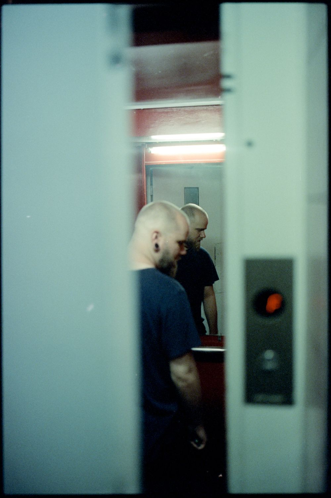
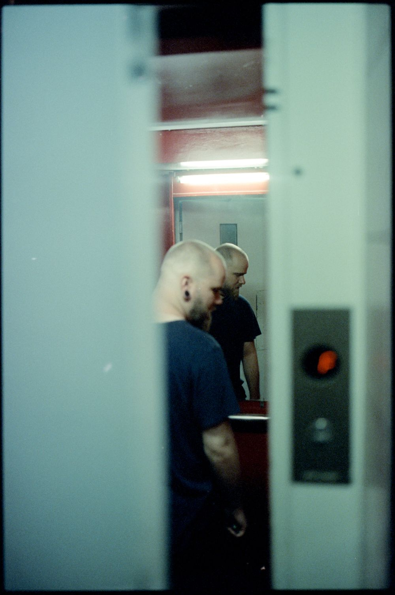

Egészen pontosan Kodak Ektachrome és Vision3 filmeket használt a forgatások során. Rengeteg blog és magazin cikkezik a fergeteges látványvilágról amit ezek a filmek, illetve Marcell és csapata kölcsönöznek a sorozatnak. Elképesztő megoldásokat használtak a világítás és fénytechnika terén is, kövessétek be őt, csomó izgis kulisszatitkot oszt meg Instáján.
Na, de miért is írok erről? A Café Analóg segítségével nekem is volt alkalmam ugyanezt a Kodak Vision3 analóg (mozi)filmet kipróbálni, mind az 500T és 50D változatot is. Kisfilmes kazettában lehet kapni, 36 kockás kivitelben, melynek az ára tartalmazza az ECN-2 hívást is. Ezekből a tekercsekből hoztam el most Nektek néhány felvételt.
 
